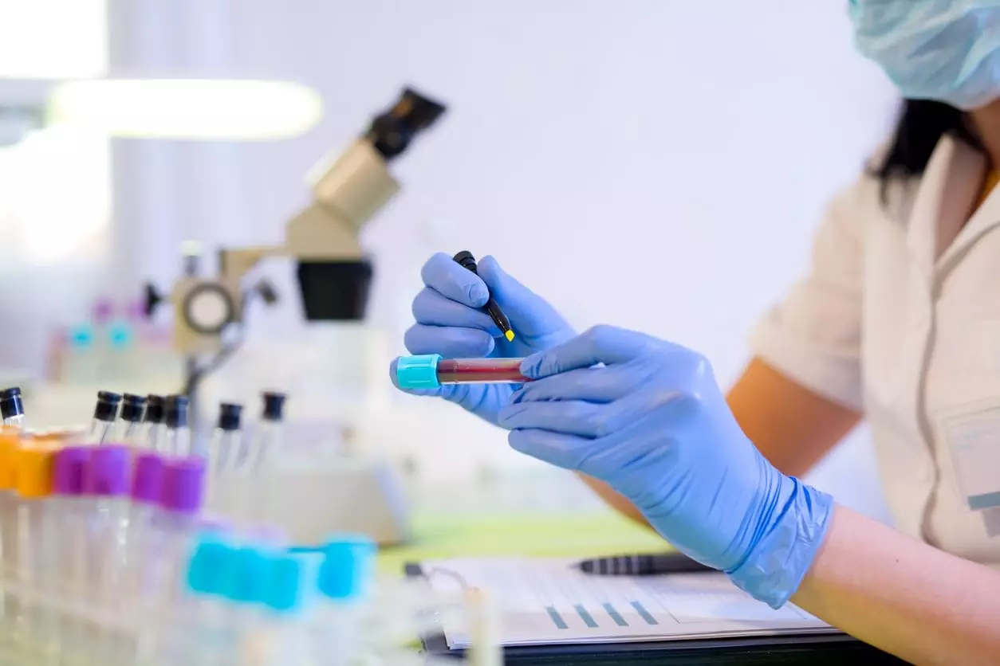

Lab en casa
Los servicios a domicilio son un concepto basico y fundamental, que prioriza blut laboratorios con la finalidad de lograr la contencion y la recuperacion de pacientes con enfermedades o controles, logrando a traves de esta herramienta el cuidado y la prevencion de nuestros pacientes en su domicilio o lugar de trabajo
Contactate con nuestros profesionales